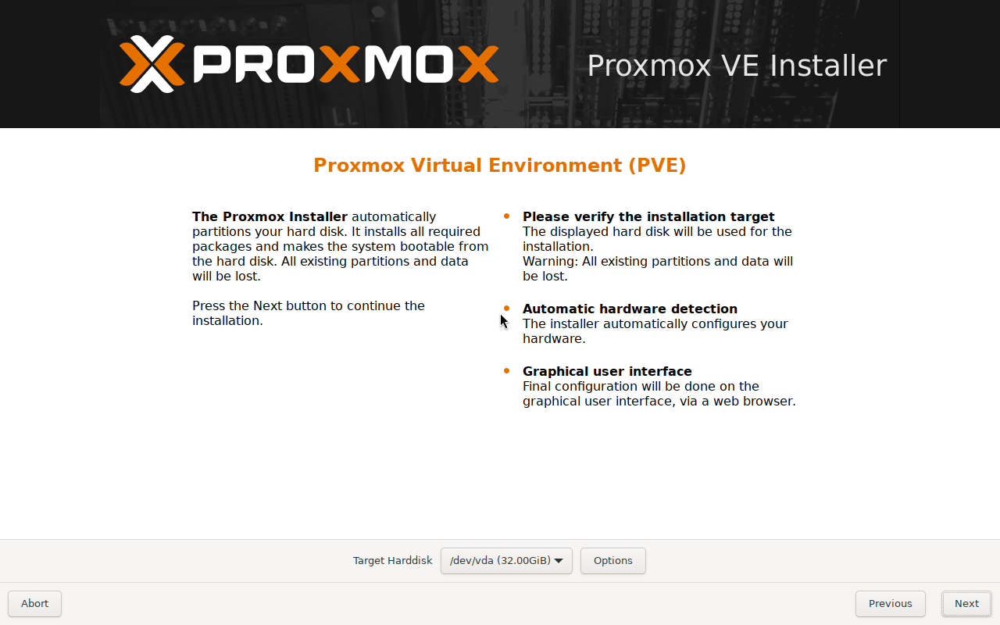
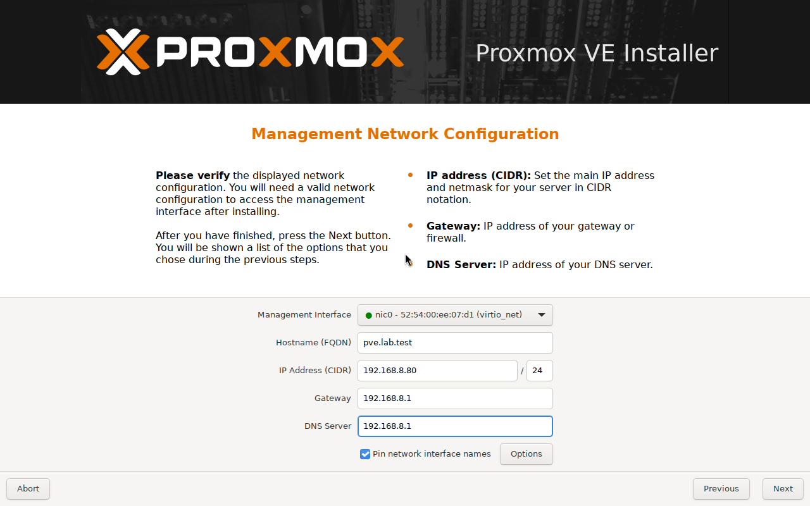
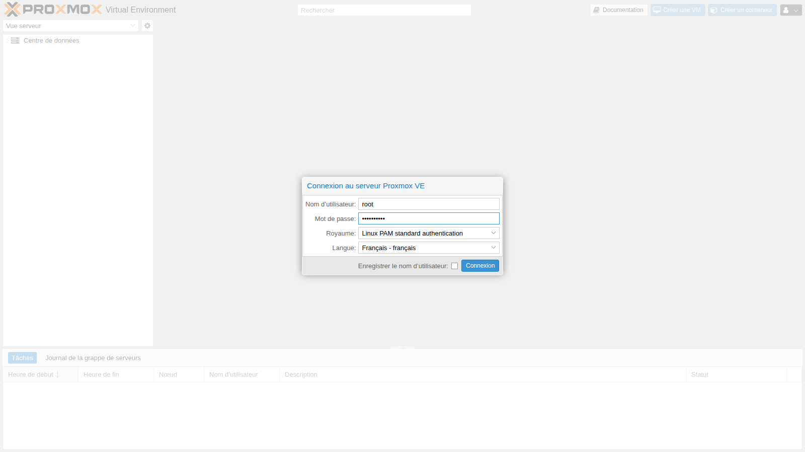
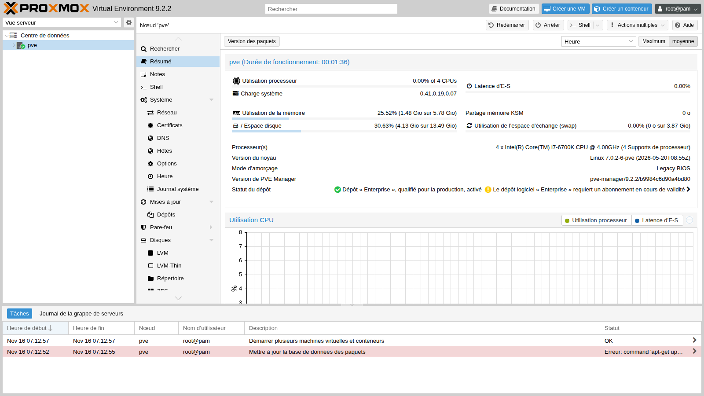
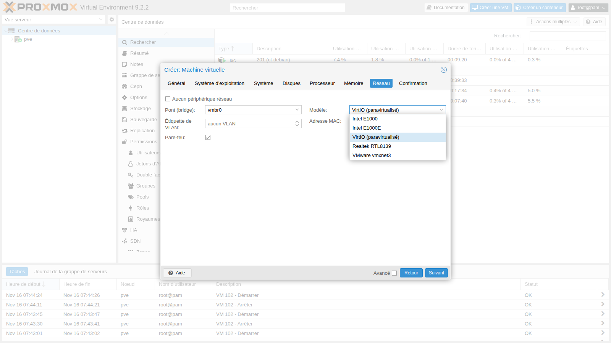

Types d'hyperviseurs et paravirtualisation¶
Résumé
Au jour 1, on a distingué les hyperviseurs de type 1 et de type 2. Cette partie va plus loin : elle explique comment un hyperviseur fait tourner un système invité sans qu'il prenne le contrôle du matériel (virtualisation complète, paravirtualisation, virtualisation assistée par le matériel), et pourquoi les pilotes paravirtualisés sont si importants pour les performances.
Le TP installe un vrai hyperviseur de type 1, Proxmox VE 9.2, dans une VM Workstation (virtualisation imbriquée), le configure, puis compare deux VM identiques : l'une avec un disque et une carte réseau émulés, l'autre avec des périphériques VirtIO paravirtualisés. Le résultat est sans appel : environ 19 fois plus de débit réseau avec VirtIO.
| Propriété | Valeur |
|---|---|
| Difficulté | Intermédiaire |
| Durée estimée | 2 h 30 (dont environ 5 minutes d'installation de Proxmox) |
| Version décrite | VMware Workstation Pro 26H1, Proxmox VE 9.2 (9.2.2), Debian 13 |
| Place dans le parcours | Partie 10 sur 17 du parcours Virtualisation — jour 3 |
| Dernière mise à jour | 2026-11-16 |
Convention de lecture
🖥️ PC hôte (Windows et Workstation) · 📦 console de la VM Proxmox (pve) dans Workstation · 🌐 interface web de Proxmox dans le navigateur du PC · 🐧 une VM Debian · ✍️ exercice · 🛟 instantané.
Prérequis :
- un PC avec 16 Go de mémoire et au moins 4 processeurs logiques ;
- l'hyperviseur de Windows désactivé (mode Host VBS impossible pour la virtualisation imbriquée) : suivre la procédure des annexes avant de commencer ;
- environ 40 Go libres sur le disque des VM ;
- toutes les autres VM éteintes :
pveutilise à lui seul 6 Go de mémoire.
1. Trois façons de virtualiser un processeur¶
1.1 Le problème à résoudre¶
Un système d'exploitation est écrit pour commander le matériel : il exécute des instructions privilégiées (changer la table des pages mémoire, piloter les interruptions, arrêter le processeur). Dans une VM, ces instructions ne doivent pas atteindre le vrai matériel, sinon le système invité prendrait le contrôle de l'hôte. L'hyperviseur doit donc les intercepter et les traiter à la place de l'invité. Il y a trois façons de le faire.
| Technique | Principe | L'invité est-il modifié ? | Exemples |
|---|---|---|---|
| Virtualisation complète (logicielle) | L'hyperviseur exécute directement le code ordinaire de l'invité et traduit à la volée les instructions sensibles en instructions sûres (traduction binaire) | Non | Les premières versions de VMware (1998-1999) |
| Paravirtualisation | Le noyau de l'invité est modifié : au lieu d'exécuter une instruction sensible, il appelle directement l'hyperviseur (un hypercall), comme un programme appelle le système | Oui (noyau adapté) | Xen en mode PV (2003) |
| Virtualisation assistée par le matériel | Le processeur (VT-x, AMD-V) exécute l'invité dans un mode spécial et rend la main à l'hyperviseur dès qu'une instruction sensible est tentée | Non | KVM, Hyper-V, ESXi, Workstation, VirtualBox aujourd'hui |
Et l'émulation ?
Un émulateur (comme QEMU utilisé seul, sans KVM) simule tout le processeur par logiciel, instruction par instruction. Il peut faire tourner un système prévu pour un autre processeur (un système ARM sur un PC x86, par exemple), mais il est beaucoup plus lent. La virtualisation, elle, exécute le code de l'invité directement sur le vrai processeur.
1.2 Aujourd'hui : assistance matérielle et pilotes paravirtualisés¶
Depuis l'arrivée de VT-x et d'AMD-V (2005-2006), tous les hyperviseurs utilisent l'assistance matérielle pour le processeur et la mémoire. Mais il reste les périphériques : disque, carte réseau, carte graphique. L'hyperviseur peut les présenter de deux façons :
| Périphérique émulé | Périphérique paravirtualisé | |
|---|---|---|
| Ce que voit l'invité | Un vrai modèle de matériel, ancien et très répandu (contrôleur IDE Intel PIIX, carte Intel E1000, Realtek RTL8139…) | Un périphérique « idéal » qui n'existe pas en vrai (VirtIO, vmxnet3, PVSCSI…) |
| Pilote nécessaire | Le pilote du vrai matériel, présent dans presque tous les systèmes | Un pilote spécial, conscient d'être virtualisé |
| Fonctionnement | L'hyperviseur doit imiter chaque registre du vrai matériel : beaucoup d'allers-retours | L'invité et l'hyperviseur échangent directement des lots de données en mémoire partagée |
| Performances | Faibles | Proches du matériel réel |
| Usage | Compatibilité (vieux systèmes, installation de Windows sans pilotes) | Par défaut, dès que l'invité a les pilotes |
| Famille d'hyperviseurs | Pilotes paravirtualisés | Où les trouver |
|---|---|---|
| KVM, Proxmox VE | VirtIO (disque virtio-scsi, virtio-blk, carte virtio-net, ballon…) |
Dans le noyau Linux ; pour Windows, l'ISO virtio-win |
| VMware | vmxnet3 (réseau), PVSCSI (disque) | Dans le noyau Linux ; VMware Tools pour Windows |
| Hyper-V | Pilotes de « services d'intégration » (VMBus) | Intégrés à Windows et au noyau Linux |
| Xen | Pilotes PV (mode PVHVM) | Noyau Linux, pilotes Xen pour Windows |
1.3 Proxmox VE, un hyperviseur de type 1¶
Proxmox VE (Proxmox Virtual Environment) est un hyperviseur de type 1 libre (licence AGPLv3), édité par la société autrichienne Proxmox Server Solutions. C'est une distribution Debian (Debian 13 pour la version 9) qui utilise KVM pour les VM et LXC pour les conteneurs, avec une interface web d'administration, la gestion de clusters, la haute disponibilité, le stockage distribué Ceph et la sauvegarde. Gratuit, il est devenu une alternative très répandue à VMware vSphere depuis 2023. Un abonnement facultatif donne accès au support et au dépôt de mises à jour « entreprise ».
2. TP : installer Proxmox VE dans Workstation¶
2.1 Télécharger l'image¶
- 🖥️ Télécharger l'image ISO de Proxmox VE 9.2 depuis la page de téléchargement officielle (environ 1,7 Go, sans compte) et la ranger dans
C:\VM\ISO. - 🖥️ Vérifier son empreinte SHA256 avec
Get-FileHash(comme en partie 3) et la comparer à celle de la page de téléchargement.
2.2 Créer la VM pve¶
- 🖥️ File > New Virtual Machine, configuration Typical, image ISO de Proxmox VE.
- Select a Guest Operating System : Linux, version Debian 13.x 64-bit (ou la version de Debian la plus récente de la liste) : Proxmox VE 9 est une Debian 13.
- Nom
pve, emplacementC:\VM\pve; disque de 32 Go. - Customize Hardware :
- Memory : 6144 Mo (6 Go) ; sur un PC de 16 Go, c'est le maximum raisonnable ;
- Processors : 1 processeur, 4 cœurs (2 si le PC n'a que 4 processeurs logiques), et cocher Virtualize Intel VT-x/EPT or AMD-V/RVI ;
- Network Adapter : NAT.
- Décocher Power on this virtual machine after creation, puis Finish.
- 🖥️ Dans VM > Settings > Options > Advanced, choisir BIOS dans Firmware type, comme pour
debian-tp.
Pourquoi cocher « Virtualize Intel VT-x/EPT or AMD-V/RVI » ?
Proxmox VE est lui-même un hyperviseur : pour faire tourner ses propres VM avec KVM, il a besoin des extensions VT-x ou AMD-V. Cette case transmet ces extensions à la VM : c'est la virtualisation imbriquée (nested virtualization), un hyperviseur dans un hyperviseur. Elle n'est possible que si l'hyperviseur de Windows est désactivé ; elle a un coût en performances, acceptable pour un lab, pas pour la production.
2.3 Installer Proxmox VE¶
- 🖥️ Démarrer la VM
pve. 📦 Dans le menu, choisir Install Proxmox VE (Graphical). - END USER LICENSE AGREEMENT (EULA) : I agree.
-
Target Harddisk : le disque de 32 Go proposé ; ne rien changer dans Options (système de fichiers ext4 avec LVM). Next.

Le disque choisi sera entièrement effacé
-
Location and Time Zone selection : taper
Francedans Country : le fuseau passe à Europe/Paris et le clavier (Keyboard Layout) à French tout seul. Le clavier de l'installateur passe aussitôt en AZERTY. - Administration Password and Email Address : mot de passe
Virtu2026!(deux fois) et une adresse e-mail, obligatoire (par exempleadmin@lab.test) : Proxmox y enverra ses alertes. -
Management Network Configuration :
- Management Interface : la seule carte proposée (
nic0) ; - Hostname (FQDN) :
pve.lab.test; - IP Address (CIDR) :
192.168.x.80/24, avec lexde son VMnet8 ; - Gateway et DNS Server :
192.168.x.2.

Exemple d'écran rempli (ici sur un réseau 192.168.8.0/24)
Une adresse fixe, hors de la plage DHCP
L'installateur propose l'adresse reçue par DHCP (en
.128ou au-dessus) : la remplacer par.80, une adresse fixe hors de la plage DHCP de VMnet8 (.128à.253). Un hyperviseur doit toujours avoir une adresse fixe : on doit pouvoir le joindre au même endroit après chaque redémarrage. - Management Interface : la seule carte proposée (
-
Summary : vérifier le résumé, puis Install. L'installation copie les fichiers en 4 à 5 minutes.
- Installation successful! : cliquer sur Reboot. 📦 La console affiche ensuite l'adresse de l'interface web,
https://192.168.x.80:8006/, et l'invitepve login:.
2.4 Se connecter à l'interface web¶
- 🌐 Dans le navigateur du PC, ouvrir
https://192.168.x.80:8006. Le navigateur affiche un avertissement de sécurité : Proxmox utilise un certificat auto-signé. Dans un lab, continuer vers le site (Paramètres avancés > Continuer). -
🌐 Sur l'écran de connexion, choisir d'abord la Langue Français - français, puis : Nom d'utilisateur
root, Mot de passeVirtu2026!, Royaume Linux PAM standard authentication, puis Connexion.
La langue se choisit sur l'écran de connexion
-
🌐 Une fenêtre Aucun abonnement en cours de validité s'affiche : c'est normal, Proxmox VE est utilisable gratuitement sans abonnement. Cliquer sur OK (elle reviendra à chaque connexion).
-
🌐 Dans l'arbre de gauche, ouvrir Centre de données > pve, puis Résumé : on y voit le processeur, la mémoire, le disque et la version.

Le résumé du nœud
pve: un serveur de virtualisation, administré depuis un navigateur
2.5 Utiliser le dépôt gratuit des mises à jour¶
Par défaut, Proxmox VE est réglé sur le dépôt Enterprise, réservé aux abonnés : la mise à jour échoue (erreur 401 Unauthorized). On passe sur le dépôt gratuit pve-no-subscription, comme le prévoit la documentation de Proxmox.
- 🌐 Ouvrir pve > Shell : un terminal
roots'ouvre dans le navigateur. -
🌐 Créer le fichier du dépôt gratuit :
-
🌐 Désactiver les dépôts réservés aux abonnés, puis mettre à jour la liste des paquets :
Vérifier son lab
apt updatese termine sans erreur401, avec une lignepve-no-subscription.- 🌐 pve > Mises à jour > Dépôts affiche « Vous disposez des mises à jour de Proxmox VE ».
- La mise à jour complète (
apt full-upgrade) n'est pas nécessaire pour le TP ; en production, on l'applique régulièrement.
🛟 🌐 Éteindre pve (bouton Arrêter en haut à droite du nœud), puis 🖥️ prendre l'instantané 01-pve-installe dans Workstation.
3. TP : périphériques émulés contre VirtIO¶
On crée deux VM Debian identiques, sauf leurs périphériques :
| VM | Disque | Carte réseau |
|---|---|---|
101 emulee |
Contrôleur IDE (Intel PIIX, émulé) | Intel E1000 (émulée) |
102 virtio |
VirtIO SCSI single (paravirtualisé) | VirtIO (paravirtualisée) |
Pour gagner du temps, on n'installe pas Debian : on importe l'image disque officielle prête à l'emploi de Debian 13, et Proxmox configure le compte et le réseau au premier démarrage grâce à cloud-init.
3.1 Créer les deux VM¶
-
🖥️ Démarrer
pve. 🌐 Ouvrir pve > Shell et télécharger l'image Debian 13 generic (environ 440 Mo) :wget https://cloud.debian.org/images/cloud/trixie/latest/debian-13-generic-amd64.qcow2 wget https://cloud.debian.org/images/cloud/trixie/latest/SHA512SUMS grep 'debian-13-generic-amd64.qcow2$' SHA512SUMS | sha512sum -c -La dernière commande vérifie l'empreinte de l'image, comme en partie 3 : elle doit répondre
debian-13-generic-amd64.qcow2: Réussi(ouOK).L'image « generic », pas « genericcloud »
L'image
genericcloud, plus légère, n'a pas le pilote de la carte Intel E1000 : la VM émulée démarrerait sans réseau. C'est une bonne illustration du tableau de la section 1.2 : un périphérique émulé a besoin du pilote du vrai matériel. -
🌐 Créer la VM 101 (remplacer
xpar le troisième octet de son VMnet8) :qm create 101 --name emulee --memory 1024 --cores 1 --ostype l26 \ --net0 e1000,bridge=vmbr0 \ --ide0 local-lvm:0,import-from=/root/debian-13-generic-amd64.qcow2 \ --ide2 local-lvm:cloudinit --boot order=ide0 \ --ciuser tssr --cipassword 'Virtu2026!' \ --ipconfig0 ip=192.168.x.81/24,gw=192.168.x.2 --nameserver 192.168.x.2 -
🌐 Créer la VM 102 :
qm create 102 --name virtio --memory 1024 --cores 1 --ostype l26 \ --net0 virtio,bridge=vmbr0 --scsihw virtio-scsi-single \ --scsi0 local-lvm:0,import-from=/root/debian-13-generic-amd64.qcow2,iothread=1 \ --ide2 local-lvm:cloudinit --boot order=scsi0 \ --ciuser tssr --cipassword 'Virtu2026!' \ --ipconfig0 ip=192.168.x.82/24,gw=192.168.x.2 --nameserver 192.168.x.2 -
🌐 Démarrer les deux VM :
qm start 101puisqm start 102. Elles sont joignables au bout d'une minute environ.
Que font ces options ?
--net0 e1000,bridge=vmbr0: une carte réseau Intel E1000, branchée sur le pontvmbr0(le commutateur virtuel de Proxmox, relié à la carte depve).--ide0 local-lvm:0,import-from=…: un disque IDE, créé sur le stockagelocal-lvmen important l'image téléchargée.--scsihw virtio-scsi-singleet--scsi0 …,iothread=1: un contrôleur VirtIO SCSI et son disque, avec un fil d'exécution dédié aux entrées-sorties.--ide2 local-lvm:cloudinit: un petit lecteur virtuel qui transmet à cloud-init le compte (--ciuser,--cipassword) et la configuration réseau (--ipconfig0,--nameserver).- Avec l'assistant web (Créer une VM), les valeurs par défaut sont justement VirtIO SCSI single et une carte VirtIO (paravirtualisé) : Proxmox choisit la paravirtualisation dès que possible.

Dans l'assistant Créer une VM, le modèle de carte réseau se choisit dans l'onglet Réseau
3.2 Observer ce que voit chaque VM¶
- 🌐 Ouvrir la Console de la VM 101 (sélectionner la VM dans l'arbre, puis Console) et se connecter en
tssr/Virtu2026!. Faire de même, dans un autre onglet, pour la VM 102. -
🐧 Dans chaque VM, installer les deux petits outils d'inventaire, puis observer :
Vérifier son lab
VM 101 emulee |
VM 102 virtio |
|
|---|---|---|
Carte réseau vue par lspci |
Intel Corporation 82540EM Gigabit Ethernet Controller |
Red Hat, Inc. Virtio … network device |
Pilote (ethtool -i) |
driver: e1000 |
driver: virtio_net |
| Contrôleur de disque | IDE interface: Intel Corporation 82371SB PIIX3 IDE |
Red Hat, Inc. Virtio … SCSI |
La VM 102 voit aussi un contrôleur IDE : il porte seulement le lecteur cloud-init.
3.3 Mesurer le débit réseau¶
-
🌐 Sur le nœud (pve > Shell), installer et lancer le serveur de mesure iperf3 :
-
🐧 Dans chaque VM, installer iperf3 et mesurer pendant 10 secondes le débit vers le nœud :
-
Noter la ligne
receiver(débit reçu) de chaque VM, et refaire la mesure trois fois.
Vérifier son lab
La VM VirtIO va beaucoup plus vite. Exemple de mesure, sur un Proxmox VE lui-même virtualisé :
| Essai | VM 101 (E1000 émulée) | VM 102 (VirtIO) |
|---|---|---|
| 1 | 621 Mbit/s | 16,2 Gbit/s |
| 2 | 650 Mbit/s | 11,7 Gbit/s |
| 3 | 628 Mbit/s | 11,8 Gbit/s |
Soit environ 19 fois plus de débit en VirtIO. Les chiffres exacts dépendent du PC ; seul le rapport compte. Le trafic ne quitte pas le nœud (il passe par le pont vmbr0), d'où des débits supérieurs à ceux d'une vraie carte à 1 Gbit/s.
Et le disque ?
La différence existe aussi pour le disque : sur le même lab, une réécriture de 1 Go (dd … oflag=direct conv=notrunc) atteint environ 1,7 Go/s en VirtIO SCSI contre 610 Mo/s en IDE, et une lecture directe environ 3 Go/s contre 650 Mo/s. Mais dans une VM imbriquée, ces mesures sont très perturbées par le disque du PC et par ses caches : ne pas s'étonner de résultats irréguliers.
Les VM 101 et 102 n'ont pas de réseau
- Vérifier dans la console de la VM l'adresse (
ip -br a) et la passerelle (ip route) : elles doivent correspondre auxde son VMnet8. Sinon, corriger les valeurs dans l'onglet Cloud-Init de la VM, régénérer l'image cloud-init (bouton en haut de l'onglet), puis redémarrer la VM. - Vérifier que la VM
pveest bien sur NAT dans Workstation, et que le nœud lui-même joint Internet (ping -c 3 deb.debian.orgdans pve > Shell). - Pour la VM 101, vérifier qu'on a bien utilisé l'image generic (pilote E1000 présent).
3.4 Arrêter les VM¶
🌐 Éteindre les VM 101 et 102 (qm shutdown 101 et qm shutdown 102) : la VM 102 resservira en partie 12, la 101 en partie 13.
4. Questions de révision¶
- Quelles sont les trois techniques pour virtualiser un processeur ? Laquelle demande de modifier le système invité ?
- Quelle différence y a-t-il entre l'émulation et la virtualisation ?
- Pourquoi une carte réseau paravirtualisée est-elle plus rapide qu'une carte émulée ?
- Pourquoi propose-t-on encore des périphériques émulés (IDE, E1000) ?
- Que faut-il cocher dans Workstation pour installer Proxmox VE dans une VM, et pourquoi ?
- Pourquoi l'installation de Windows dans une VM Proxmox avec un disque VirtIO demande-t-elle une ISO de pilotes supplémentaire ?
Corrigé
- La virtualisation complète (traduction binaire des instructions sensibles), la paravirtualisation (le noyau invité appelle directement l'hyperviseur) et la virtualisation assistée par le matériel (VT-x, AMD-V). La paravirtualisation demande un noyau invité modifié.
- L'émulation simule tout le processeur par logiciel (elle peut faire tourner un système prévu pour un autre type de processeur, mais lentement) ; la virtualisation exécute le code de l'invité directement sur le vrai processeur, et n'intercepte que les opérations sensibles.
- Avec une carte émulée, l'hyperviseur doit imiter chaque registre d'un vrai matériel, ce qui provoque de très nombreux allers-retours entre l'invité et l'hyperviseur. Avec VirtIO, l'invité et l'hyperviseur échangent directement des lots de données en mémoire partagée.
- Pour la compatibilité : un système ancien, ou un Windows en cours d'installation, possède les pilotes des vrais matériels très répandus, mais pas ceux de VirtIO.
- Virtualize Intel VT-x/EPT or AMD-V/RVI (dans VM > Settings > Processors) : Proxmox VE a besoin de ces extensions pour faire tourner ses propres VM avec KVM. C'est la virtualisation imbriquée, qui exige aussi que l'hyperviseur de Windows soit désactivé.
- Parce que Windows ne contient pas les pilotes VirtIO : sans eux, l'installateur ne voit pas le disque. On ajoute l'ISO
virtio-winen second lecteur et on charge le pilote pendant l'installation (ou on utilise un disque SATA, émulé, plus lent).
Ressources¶
- Proxmox VE — Documentation officielle — le guide de l'administrateur (en anglais).
- Proxmox VE — Dépôts de paquets — dépôts Enterprise et no-subscription (en anglais).
- Xen Project — Concepts — paravirtualisation, HVM et PVH expliqués par le projet Xen (en anglais).
- Broadcom — Paramètres du processeur d'une VM Workstation 26H1 — dont la virtualisation de VT-x (en anglais).
- Partie précédente : Panorama des technologies · Partie suivante : Conteneurs.